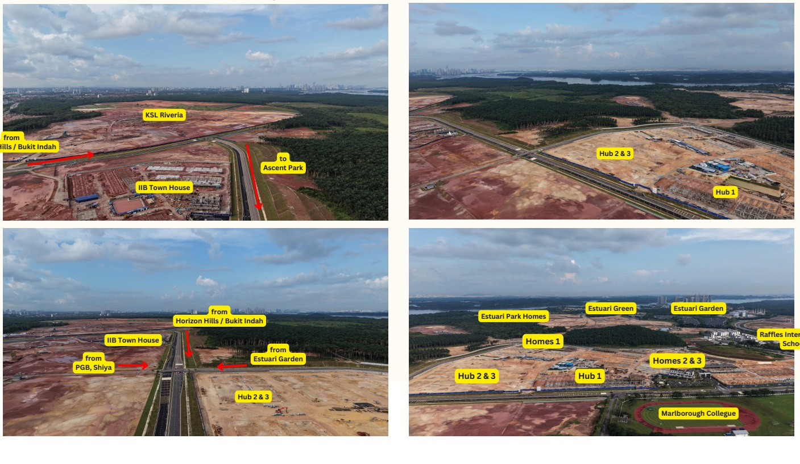

A Medini condo and a new landed home in Bandar Wawari are not two versions of the same investment. One may give an investor a clearer route to rental demand at a lower entry price. The other may suit a buyer who can hold longer and accepts that a new township needs time to prove itself.
Do not mix up rental yield and capital growth
Investors often use the word “ROI” to describe two different outcomes. Rental yield is the income left after vacancy, management fees, repairs, furnishing, agent fees and other holding costs. Capital growth is the change in the value of the property when you eventually sell.
A property can have a workable rental story but little price growth. Another can have a lower yield in the early years but more long-term upside if the surrounding area becomes more useful and more buyers want the same type of home. Both outcomes still depend on price paid, supply, management, demand and your holding period.
Why Medini can be the more direct rental play
Medini is mainly a high-rise and serviced-residence market. It offers one-, two- and three-bedroom layouts, as well as selected dual-key formats. That creates a lower-entry route than many new landed launches in Iskandar Puteri, although every project and unit has a different price, maintenance fee and tenant profile.
Its rental case is not simply “near Singapore”. A more useful question is: who would rent this exact unit? Possible demand stories include Singapore-linked workers using the Second Link direction, parents and students connected with international education in the wider Iskandar Puteri area, hospital or education professionals, and short-stay visitors. Each story needs current evidence.
A two- or three-bedroom unit can be more relevant to a small family than a compact studio. A dual-key unit can offer flexibility, but it is not automatically more profitable. Check whether the building is well managed, whether the layout is genuinely useful, how many similar furnished units are competing, and whether the building's current rules allow the intended use.
For the wider area and project context, read the Medini Condo Guide. If you are comparing a first purchase with a generic landed option, see Medini Condo vs Iskandar Puteri Landed Property.
Why Bandar Wawari is a different long-term bet
Bandar Wawari is not principally a condo-rental comparison. It is a developing township where buyers can consider new landed homes, including freehold choices such as Riveria Garden @ Wawari. A landed home has a different buyer pool, a higher capital commitment and a different rent-to-price relationship from a condo.
The investment idea is not that a new township must appreciate. It is that a buyer may be purchasing a new freehold landed home before the roads, homes, shops and daily activity fully mature. If development is delivered well and end-user demand grows, the wider township may become more valuable. If delivery is slower than expected, supply is too large or daily life remains inconvenient, capital can stay tied up for longer than planned.

Medini condo versus Bandar Wawari landed
| Investment question | Medini condo | Bandar Wawari landed home |
|---|---|---|
| Primary investment logic | Potentially earlier rental demand from a specific unit and tenant profile. | Longer holding period and possible township-led value growth. |
| Entry and cash flow | Usually a lower entry point than a new landed home; still include maintenance and sinking-fund costs. | Higher capital commitment; rental income may be less efficient relative to the purchase price. |
| Likely tenant or buyer | Workers, small families, students, parents or short-stay guests, depending on the unit and building rules. | Long-term family tenant or future owner-occupier who values a new landed home. |
| Main risk | High-rise supply, weak management, vacancy and many similar rental listings. | Township maturity, construction timing, holding cost and demand taking longer to form. |
| Time horizon | May suit an investor who needs to test rental demand sooner. | More suitable for a patient buyer who can hold through the development stage. |
Who may prefer Medini?
- An investor whose budget does not comfortably reach a new landed home.
- A buyer who wants to focus on rental evidence and a defined tenant segment first.
- Someone who accepts high-rise ownership, including management fees and shared facilities.
- An investor who can inspect the actual building condition, occupancy and competing listings before buying.
Who may prefer Bandar Wawari?
- A buyer who wants a new freehold landed home rather than an older subsale home in an established township.
- An investor who does not need a high rental yield immediately to carry the property.
- Someone with enough funds for the down payment, renovation, instalments and a longer holding period.
- A patient buyer who understands that a new township may take years to become a fully mature daily-living environment.
The five-year to ten-year question
A new township can take many years to build its identity. That is not automatically bad; it is the trade-off for entering before every component is complete. But this is only suitable for a buyer who can hold through changing construction conditions, additional launches and a gradual build-up of shops, neighbours and services.
If you need rent quickly, assess Medini's current tenant evidence first. If you are choosing Bandar Wawari for long-term value, assess whether you can still hold comfortably if the township takes longer than hoped. The Bandar Wawari development guide explains the wider township context; it should not replace checking the latest project documents and actual site conditions.
Calculate both investments before deciding
- For a Medini condo, estimate net annual rent after all recurring costs and a realistic vacancy allowance.
- Check current rental listings, not only advertised asking rents, for comparable size, furnishing and condition.
- For a Bandar Wawari landed home, calculate the cash needed during construction, after completion and during any empty period.
- Do not treat future road, retail or township plans as guaranteed resale profit.
- Ask which exit buyer you expect in five to ten years, and whether the purchase price leaves room for that buyer's alternatives.
Sam's view
If your first priority is to find income sooner, a sensibly priced Medini condo with a tenant story you can verify may be the more practical place to start. Do not call it a good investment until you have checked net yield, competing supply and management quality.
If you prefer new freehold landed ownership and can wait for a developing township to become more complete, Bandar Wawari can be a different type of opportunity. Its case is longer-term and depends on delivery, end-user demand and the price you pay. It should never be sold as guaranteed capital growth.
See the two routes in a real project context
Medini: Bodaiju Residences
If you are exploring a new Medini serviced apartment rather than an older resale unit, Bodaiju is a practical project to compare for layout, entry budget and rental strategy. Assess the exact unit, management costs and tenant competition before treating it as an income investment.
Explore Bodaiju Residences →Bandar Wawari: Ascent Park and Ascent Hub
Ascent Park is another new landed choice in the Bandar Wawari area. Its wider development includes the planned Ascent Hub commercial component. Treat that future convenience as a factor to monitor, not a reason to ignore today’s access, price or holding risk.
Explore Ascent Park →Frequently Asked Questions
Is a Medini condo better for rental yield than a Bandar Wawari landed home?
It may have a more direct rental story because of its lower entry price and possible tenant segments, but the result depends on net rent, vacancy, maintenance, management and competing supply. Compare real evidence for a specific unit.
Will a Bandar Wawari landed home definitely gain more value?
No. A new freehold landed township may have long-term potential, but price growth depends on delivery, infrastructure, demand, supply, the purchase price and how long you can hold.
Should I choose rental income or capital growth?
Start with your cash position and time horizon. Choose a rental-focused strategy only if you can verify net income. Choose a longer-term growth strategy only if you can hold comfortably if development or demand takes longer than expected.
Draft prepared from Sam Tee's buyer observations and current site material. Prices, project availability, tenure, road access, building rules, rental demand and development timelines can change. Verify the latest developer documents, current comparable listings, building rules and legal advice before making a purchase decision. This article is general information, not legal, tax, financial or investment advice.